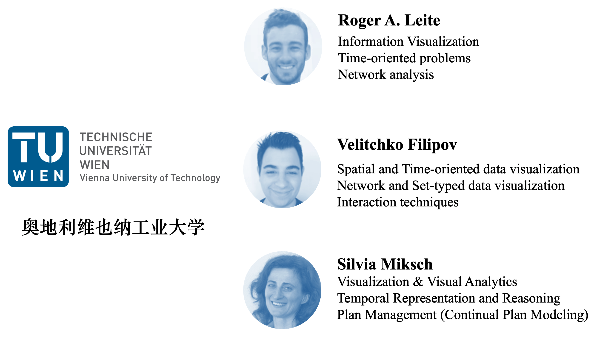
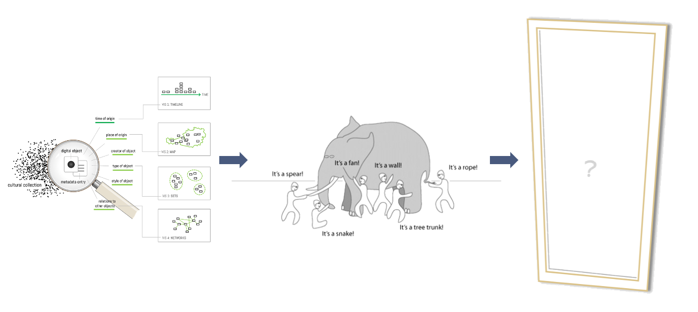
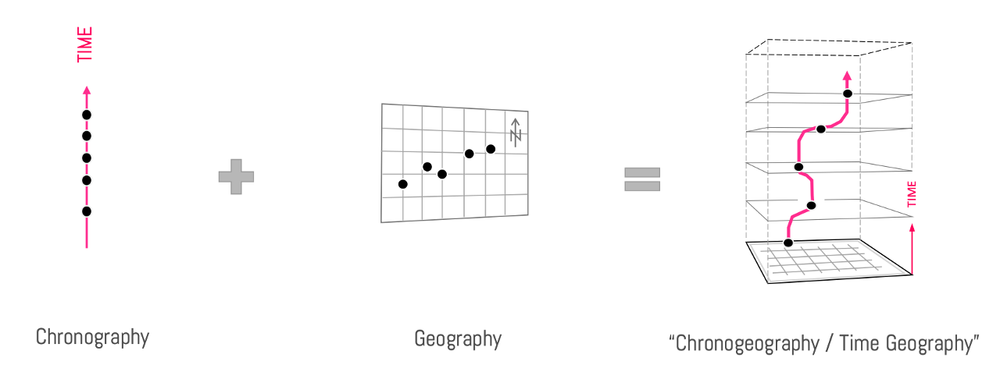
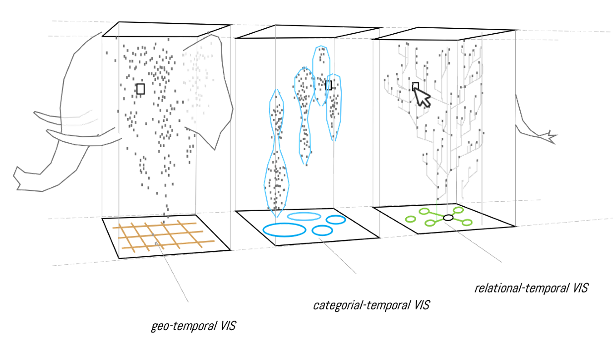
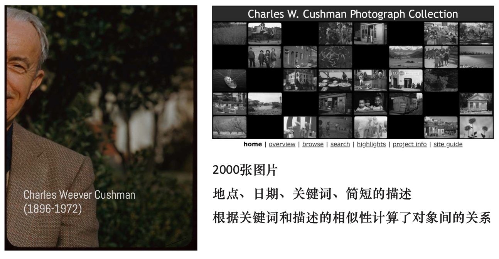
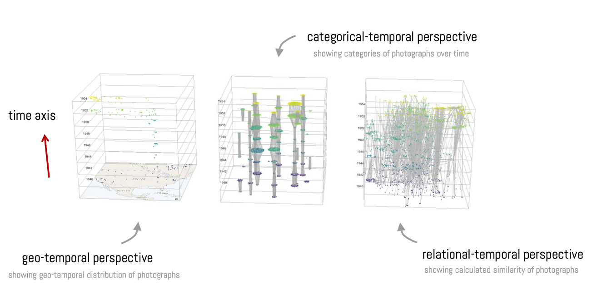

论文：Many Views Are Not Enough: Designing for Synoptic Insights in Cultural Collections
作者：Florian Windhager, Saminu Salisu, Roger A. Leite, Velitchko Filipov, Silvia Miksch, Gunther Schreder, Eva Mayr
发表：IEEE Computer Graphics and Applications. 2020
对数字化的文物藏品的全面掌握和浏览对受众来说是个挑战。虽然可视化可以创建各种类型的文物藏品概览，但它们不容易组合成 “大图片 “以帮助受众形成整体的理解。这项工作引入了连贯性技术来最大化多个可视化视图之间的联系，并将其应用于藏品可视化的原型PolyCube系统中。对于时间维度，它提供了四种不同的视角：叠加、动画、并列和时空立方体。一项用户研究证实，该系统可以更好的支持受众获得概览性的、跨维度的洞察力。文章还对该系统在其他艺术和人文学科领域的适用性进行了展望。
作者简介

这个工作主要是由奥地利克莱姆斯多瑙大学和维也纳工业大学合作完成。一作Florian Windhager主要的研究方向是Cultural Heritage and History Data 以及 Digital Humanities。在数字人文领域已经发表了多篇文章。
背景&动机
历史文物集审美、历史、科学和社会价值于一体。现代人基于保存、学习、传承的目的，建立了一套机构，也就是GLAM（美术馆、图书馆、档案馆、博物馆）。文化藏品具有高度感知复杂性的极其丰富的物体组合，而且与大量的附加信息相关联，经常被浓缩在相对较小的展览空间中。这导致受众很容易被大量的细节所淹没，因为大量的信息而迅速感到疲劳。
可视化对数字文化藏品起到了至关重要的作用。除了真实的物体图像，为选定的物体提供详细的视图（如照片或3-D扫描），信息可视化提供了多种选择，以创建藏品概览和屏幕上的可浏览安排。多视图可以有效地将不同的视角连接成一个互补的整体，但是它们也有一些缺点。
- 挑战1：用户的注意力分散在不同的视图之间，增加了感知的复杂性。
- 挑战2：多个视图所提供的信息不能轻易地进行认知整合。
文章贡献
- 系统： PolyCube，一个用于文化收藏的原生型可视化系统 ，以一种更综合的方式将信息可视化，以促进协同的洞察力和跨维度的推理。
- 模型：帮助用户对收集到的多个维度形成综合理解。
- 评估：对系统进行了用户研究和定性分析，并对未来的工作进行展望。
任务分析
- 目标群体：Casual Users
- 具有不同视觉素养、专家知识和兴趣水平
- 没有动力投入大量的时间精力来认知和关联所有可用的信息和观点
- 复杂的系统很容易让他们在早期就停止互动
- 系统任务：

- Overview first：获得关于文化藏品的主要数据维度（如时间、空间、类别、关系）分布的（综述性）概览；
- Zoom and filter：寻找个人感兴趣的单一对象并检查其细节；
- Details on demand：浏览物品（例如，根据时间、关系、地理来源或共享类别）；
- Interaction：视图转换，支持各种视图之间的切换。
方法

采用 “一致性技术 ”来支持多个可视化信息的整合，并构建 “PolyCube ”框架，实现其系统化的收集和使用。

通过使用多个立方体（”PolyCube”），为基于事件的数据生成一个概述性的呈现，并显示了地理-时间、分类-时间和关系-时间的发展模式，否则这些信息将分布在多个视图中。因此，这是一种设计策略，把整个大象放在屏幕上。
- 基于地图的时空立方体：将一个对象的时空起源可视化为一个三维点云，每个对象都可以被选中以获取详细的信息和预览。水平数据面显示的是一张地理地图，而纵轴则代表时间，是一个向上的空间维度。
- 基于集合的时空立方体：通过圆形集合图的方式使分类或集合类型的集合信息可见，其中数据点同样代表单个对象。数据点根据其主要的集合归属（可以表示文化风格、运动、策展类别或流派）水平排列。
基于网络的时空立方体：代表了对象之间的关系，基于一个力导向网络布局。为了避免太多联系产生的视觉混乱，限制显示关系的最大数量，或者根据需要隐藏链接。在加权关系的情况下，只有对象之间的最高相似度关系才会显示为链接。
视图分类：
- STC: a space–time cube representation
- SI: a color-coded superimposition view
- ANI: an animated view
- JP: a juxtaposition view
评估
- 用户：10人
- 30岁以下：2人；30-40岁：5人；50岁以上：3人；大学学历：6人；女性：9人
- 可视化经验（5个低，3个中，2个高），
- 摄影（0个低，2个中，8个高）
- 电影（1个低，2个中，7个高）
- 测试过程耗时21至33分钟（M = 28）。
- 目的
- 动画过渡如何支持用户对不同视图的理解?
- 综合编码和视图协调如何影响用户对作品集的综述洞察力?
- 系统的整体可用性，以及用户对各种协同分析视角的偏好?
数据集
文章给了两个数据集让用户进行探索，第一个是Charles W. Cushman 摄影集，第二个是IMDb 电影数据集。



评估结果
- 动画转换帮助大多数用户理解STC和JP视图。
- 由于数据点的颜色编码的连贯性中断，SI视图变得相当困难。
- 从分类颜色编码到时间颜色编码的转换没有包括在动画转换中，导致了一些困难和误解。
- 用户建议在SI中保留分类颜色编码，另外使用颜色饱和度编码时间。
- 十个用户中有九个认为STC视图最好.
- SI视图在美学方面的评价很高，但在信息价值方面的评价很低。
- JP视图得到的意见不一。大多数用户认为它对单个时间点的分析很有用，但对整体情况来说太分散了。
- 人们认为ANI作为一个起点是有用的。
- 综合编码可以成功地支持休闲用户在一段时间内获得对地理空间或类别的综述性见解。
- 几乎没有任何与网络相关的见解，随着时间的推移。这可能是由于网络视图对大多数用户来说是最复杂的视图，一些人甚至表示很难想象它的有用性。
- 没有用户去寻找整合所有三个视角的协同模式。如果有时间，有动力，或者有更多的具体任务，这样的洞察力还是可能出现的。
未来工作

- 除了文化收集数据之外，更多的人文学科主题都可以从多时空的表述中受益—并希望为此调整PolyCube框架。
- 提供了一种方法，来（重新）构建和（重新）组合大象。
讨论
- 优点：视角有趣；动机充分；系统易用。
- 缺点：没有梳理相关工作；章节结构不是很合理；没有定量分析。
- 启发：在想idea的时候可以从局部到整体，打散重构。
✉️ zjuvis@cad.zju.edu.cn